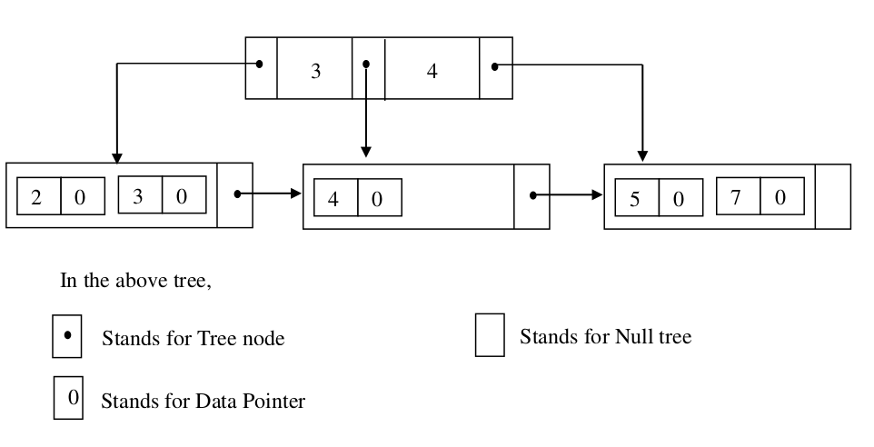

2015
Created Wed Nov 30 2016
Note: There are tables in the exam file.
1) Answer all the items within this question.
(a) In the context of relational databases,
i) 'A database can be defined as a shared collection of logically related data and its metadata'. Explain what is meant by metadata in this definition. (2)
ii) Explain why you think the ‘Employee’ table does or does not exhibit referential integrity. (2)
iii) What is the result of executing the following statement?
INSERT INTO Employee VALUES(JF22222, Joanne, Flecher,12 James Road Inverness, F); (2)
Inserts a new record into the Employee table with these values: JF22222, Joanne, Flecher,12 James Road Inverness, F
(b)
i) Define what third normal form (3NF) is. (1)
ii) Explain why the ‘Dependent’ table is in third normal form. (Assume that Dependent table has NIno, Dependent_Fname and RelationShip as primary keys) (2)
it is in 1NF because everything is atomic
it is in 2NF because every non-primary key value is functionaly dependant on the primary key
And finally no non-primary-key attribute is transitively dependent on the primary key.
iii) A friend of yours after critically examining the above database makes the comment: “The Plocation attribute in Project table should be removed because the Plocation information can be determined by the Dno foreign key.” Write your response to this comment. (2)
(c) At the logical (relational) level, the relational database for a company with several departments located in different cities shown above is composed of six tables: department, dept_location, project, employee, dependent and works_on (each with some associated records). Using UML notation, draw an enhanced entity-relationship diagram (EER) that represents the same database structure at the conceptual level. For each entity, show its minimum and maximum participatory constraints in the relationship and explain your choice of values. (6)
(d) It has been decided to extend the relational database for the company shown above to store information about the different projects that employees have worked on in the past and monthly salary payments paid to employees. A past project has a Project Number, Name, Location, Project Completed, Date Completed and a link to employees who worked on the project. The monthly salary payment information for each employee is to be extended to include a NIno, Monthly Salary and Date paid. Assume the above description is the only information available to you about past projects of the company. Also assume that you have access to the details (EER design and data dictionary) of the existing database which is shown above. You are allowed to use any entities/tables from the existing database for helping with the extension/integration.
i) Create a conceptual model for the above requirements and show your model as an EER diagram using the UML notation. (4)
ii) Transform the conceptual EER model from above into a set of relations, explaining in detail the steps you have followed. (4)
2) Please answer all the items in this section.
(a) In relation to database systems:
i. Explain the main steps involved in connecting to and querying a database from an application developed in PHP. (3)
Select database
Query database
Assing result to a variable
Process results
ii. In the context of transaction management, explain what is meant by the term ‘two-phase locking’. (4)
iii. Explain how views and privileges help you to achieve fine grain access control over data in database tables. (4)
with privileges you can access a database but not edit it. This way you can be sure that a user does not alter data which they should not.
(b) In SQL, give one example of a Data Control Language (DCL) statement (use the Employee table if you need to refer to a table in your answer). (1)
(c) Write an SQL statement to update the salary of employees working in the production department by £1500. (2)
where department = production
(d) Write an SQL statement to change the Employee table by adding a new column representing date of birth of employees. You can set the column (field) data type to be CHAR type. (2)
(e) Write an SQL query to show the first and last names of those employees who have dependents and also show the number of dependents for each of these employees. Sort the list in the alphabetical order of employee first name and last name. (5)
select fname,lname, count(dependants) as dcount
from employees, dependants
where employee.nino = dependant.nino
group by dependants
sort by fname,lname DESC
(f) Write an SQL query to show the names of employees and the names of the projects each of them works on and the total number of hours each of them spends on each of the projects. (4)
from employee, works_on, project
where works_on.nino = employee.nino
AND works_on.pno = project.pno
3. Answer all items to the following question.
(a) In relation to relational databases:
i) Briefly explain the major steps involved in relational database query processing. (3)
Normalisation
Query optimisation
Semantic analysis
Create Query execution plans
Execute query and return result to client
ii) Explain how relational algebra trees (RATs) are used in query optimisation. (2)
(b) In relation to implementing secure database transactions over the internet, briefly explain the purpose of using (i) public key / private key encryption, (ii) digital signatures, and (iii) digital certificates. (3)
ii) digital signitures are used to authenticate where a message came from
iii) digital certificates are essentially the public key used by the client side
(c) In relational databases:
i) What is an index? (1)
ii) Using the Department table as an example, show how indexing works. (2)
(d) Consider the following SQL query which refers to the Department and Employee tables given for this exam paper:
SELECT D.Dname
FROM Employee E, Department D
WHERE E.Dno = D.Dno
AND E.Lname='Smith'
AND E.Fname='John';
Write down three different but logically equivalent ways of expressing the above query in relational algebra, using the relational algebra notation (∏ for projection, σ P for selection with predicate P, × for a Cartesian product, for a natural join, and for conjunction). In your answers, use the given table aliases for brevity, use brackets as necessary to avoid ambiguities, and label your answers A, B and C. (6)
A) π E.Lname = 'Smith' Λ E.Fname = 'John' σ D.Dname (Employee {NATURAL JOIN SYMBOL} Department)
B) π E.Lname = 'Smith' Λ E.Fname = 'John' σ (Employees) {NATURAL JOIN SYMBOL} σ (Department)
C) π E.Lname = 'Smith' Λ E.Fname = 'John' ^ E.Dno = D.Dno σ D.Dname (Employee x Department)
(e) In the SQL query given above, suppose the Department and Employees tables have many rows but no indexes. Arrange your solutions (A, B, C) from question 3. (d) in order of efficiency (where A is the most efficient and C is the least efficient) and justify your answer. (3)
A, B, C
A is the most efficient because it uses a natural join first so the rest of the checks it performs are all needed C is the slowest because it performs many checks it performs for the name may be useless since the entries might not even have a department.
(f) Consider the following B+ tree

Draw the tree after a new record, whose search key field value of 14, is inserted into the tree. (5)